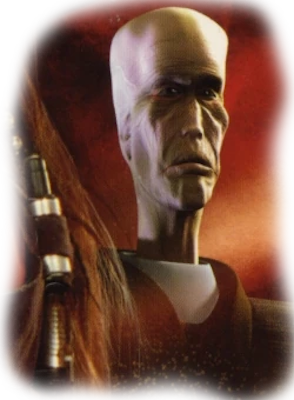

Муун
«Я — муун. Нет ничего более святого для моего народа, чем сдержать наше слово в финансовых делах».
«Это правда. Мууны оберут вас до нитки, но они никогда не жульничают».
*Нал Кенуун и Хан Соло*
Мууны — разумная раса гуманоидов с планеты Сципио, впоследствии колонизировавшая Муунилинст.
Богатая минералами планета Муунилинст являлась штаб-квартирой Межгалактического банковского клана. Мууны славились на всю Галактику своими исключительными финансовыми и математическими способностями, и потому Галактическая Империя, желая сохранить экономическую стабильность, не распространила на них свои обычные меры по притеснению нечеловеческих рас с целью использовать муунов и их финансовые таланты себе на пользу.
Имена Муунов Особенности МууновБиология и внешний вид
Мууны были высокорослыми сухопарыми гуманоидами с худощавыми телами и характерно удлинёнными головами. Они обладали безволосой, бледно-серой или бледно-розовой кожей нездорового вида, скорее всего потому, что большинство муунов не любили путешествовать даже по поверхности собственной планеты и почти всю жизнь проводили в помещениях. У муунов были небольшие уши по бокам головы, примерно на середине её высоты, тонкогубые рты и плоские, сильно приплюснутые носы. Из-за последних большинство муунов отличалось довольно-таки гнусавыми голосами.
У муунов были длинные руки и ноги, отчего они казались чрезмерно вытянутыми в высоту. Типичный муун обладал очень тонкими запястьями и длинными тонкими пальцами. Отличительной особенностью муунов было три сердца у особи, возможно, отчасти этому они обязаны долгой продолжительностью жизни.
Мууны обладали исключительно развитым интеллектом; в их отношении к торговым предприятиям жадность сочеталась с осторожностью. Их всегда манили выгодные экономические возможности, но всякий муун долго размышлял, прежде чем заключить коммерческую сделку. Дар муунов в обращении с деньгами произрастал из их исключительно ценных математических и статистических способностей. Даже мууны-дети могли с такой скоростью выводить сложные математические формулы, на которую были способны лишь взрослые представители иных рас.
Мууны считали себя зрелой, сдержанной расой, способной управлять своими эмоциями, а прочие расы — «незрелыми». Они не гнушались эксплуатировать их, если полагали это необходимым. Кроме того, мууны были одержимы духом соревнования как с другими расами, так и внутри своей собственной, что проявлялось в массированном экономическом росте везде, где только были мууны. Главнейшими ценностями муунов являлись честность и справедливость, и к заключённому контракту они относились почти как к священной клятве. Они, впрочем, больше следовали букве закона, чем его духу.
Общество и культура

Муунское общество было построено на жёсткой классовой основе. В высшие классы входили экономисты, юристы, инженеры и дипломаты. Рядовые мууны, за исключением особо одарённых детей, редко покидали пределы своей родной планеты. Дети рядовых граждан проходили суровейшую систему отборочных тестов, даровавшую право обладателям особых качеств и дарований войти в высшие классы общества.
Муунская культура и вообще вся муунская жизнь вращались вокруг экономики и финансов. Напряженная конкуренция между коллегами подстёгивала экономический рост, увеличение производства и укрепление безупречной трудовой этики. Поскольку мууны были миролюбивы и стремились уклоняться от всяческих войн и силовых решений проблем, они использовали альтернативные методы. В частности, они, пользуясь своими безразмерными капиталами, закупили гигантские оборонительные орбитальные станции для обороны своей родной планеты от нападения из космоса. Впрочем, Межгалактический банковский клан (МГБК), управляемый в основном муунами, не гнушался негласным пользованием услугами наёмников для проведения своей политики, давления на неплательщиков и подобных мероприятий.
Муунская склонность к математике повлияла и на их язык, представлявший сочетания двух звуков, «ум» и «э», произносимых на разных тонах, что напоминало двоичный язык.
Муунские имена
К примерам типичных муунских имен можно отнести: Сэн Хилл, Ларш Хилл, Порс Тонит, Рип Тонит, Хего Дамаск, Никс Кард, Мак Плейн, Клу Лессер, Битт Панит, Муз, Ло Вэпит, Гилеан, Виран.
История
В начале своей истории мууны основали Межгалактический банковский клан, который распространил своё влияние если не всю Галактику, то на большую её часть. Из-за своих огромных недр, богатых полезными ископаемыми, Муунилинст придал вес и стандарт республиканскому кредиту, в связи чем для галактического сообщества планета имела большую ценность, чем большинство Центральных Миров.
На протяжении всего правления Галактической Республики мууны умело финансировали потенциально прибыльные предприятия, отказавшись от соблюдения этических принципов. Муунилинст обеспечил большую часть финансирования соседней человеческой колонии — Сартинайниана, который, по иронии судьбы, вышел из состава Республики из-за человекоцентристских настроений. Банковские кланы Муунилинста не были заинтересованы в этих предрассудках. Они финансировали колонии, торговые гильдии и корпорации по всему Браксантскому пути. В какой-то период своей истории мууны колонизировали планету Майгито, которая, так же, как и сам Муунилинст, стала позднее богатым финансовым центром.
В конце концов Муунилинст и Сартинайниан стали членами Республики, и Муунилинст стал одной из величайших финансовых сил в галактике. Сила и влияние Банковского клана в значительной степени привели к тому, что Республика пришла в упадок и оказалась пронизана коррупцией, и с нарастающей угрозой беззакония МГБК вложился в тысячи дроидов типа «Огненный град», чтобы обеспечить погашение кредитов клиентами.
До Войн клонов председатель МГБК Сэн Хилл обратился к лидеру сепаратистского движения графу Дуку. Сэн Хилл принял участие в финансировании Конфедерации независимых систем, полагая, что Конфедерация может победить Республику. Сэн Хилл также использовал тайные финансовые каналы банковского клана для запуска Теневого вещания, секретного аналога ГолоСети, использовавшегося для распространения пропаганды в галактике. Она также использовалась в качестве средства, позволявшего лидерам Конфедерации незаметно передавать сообщения своим подчинённым, что делало Банковский клан бесценным членом Конфедерации.
Следуя своей традиции игры на обе стороны, во время Войн клонов Муунилинст одновременно поддерживал и Республику, и Конфедерацию. Альянс с Конфедерацией, однако, привёл к тому, что сепаратистские силы построили на Муунилинсте заводы дроидов и склады боеприпасов, несмотря на возражения местных муунов. Несмотря на экономическое значение, у Республики не осталось иного выбора, чем вторгнуться на Муунилинст и уничтожить твердыни конфедератов. Это привело к серии разрушительных сражений.
Во время битвы при Муунилинсте в 22 ДБЯ Оби-Ван Кеноби, Энакин Скайуокер, и Вулвиф Монн отвоевали планету для Республики, но дорогой ценой. Сражение опустошило города муунов, не жалея никого, что привело галактику на грань финансового краха.
Позже Муунилинст стал финансовым центром Галактической Империи. Император Палпатин питал нелюбовь к нелюдям, но минеральные богатства Муунилинста были слишком важны для стабильности имперского кредита; кроме того, Сидиус был обучен ситхом-мууном, много сделавшим для возвышения Ордена ситхов и падения Республики. Кредитованию и бизнес-операциям муунов мешали суровые имперские указы и присутствие имперских наблюдателей, размещенных по всем планетарным финансовым институтам. Муунилинст был лоялен к Империи в той же мере, как и к Республике или Конфедерации, но мууны, не подрывая имперскую власть, делали расчёт на то, что вне зависимости от исхода Галактической гражданской войны победитель будет вынужден продолжать делать бизнес с муунами и МГБК. Муунилинст по-прежнему входил в состав Империи во времена Новой Республики и был защищён двумя боевыми платформами Голан III. Тем не менее, в полном соответствии со своей репутацией, даже под властью Империи Муунилинст стал гарантом кредита Новой Республики. Это взбесило Совет моффов, но они были бессильны выступить против МГБК без дестабилизации имперского кредита.
Во время Юужань-вонгской войны инопланетные захватчики напали на Осколок Империи. В результате скоординированного удара вонги уничтожили силы, оборонявшие Муунилинст. Сама планета подверглась орбитальной бомбардировке, что привело к опустошению Муунилинста и порабощению выживших. К 40 ПБЯ Муунилинст оправился от потрясений.
Особенности
Ваш персонаж-муун обладает следующими особенностями, общими для всех муунов.
Увеличение характеристик. Значение вашего Интеллекта увеличивается на 2, а значение Харизмы увеличивается на 1.
Мировоззрение. Любое.
Размер. Рост 1,9.
Скорость. Ваша базовая скорость ходьбы составляет 25 футов.
Исскуство торговли. Вы владеете навыками убеждение и обман.
Языки. Вы можете говорить, читать и писать Общем и Мунском языках.